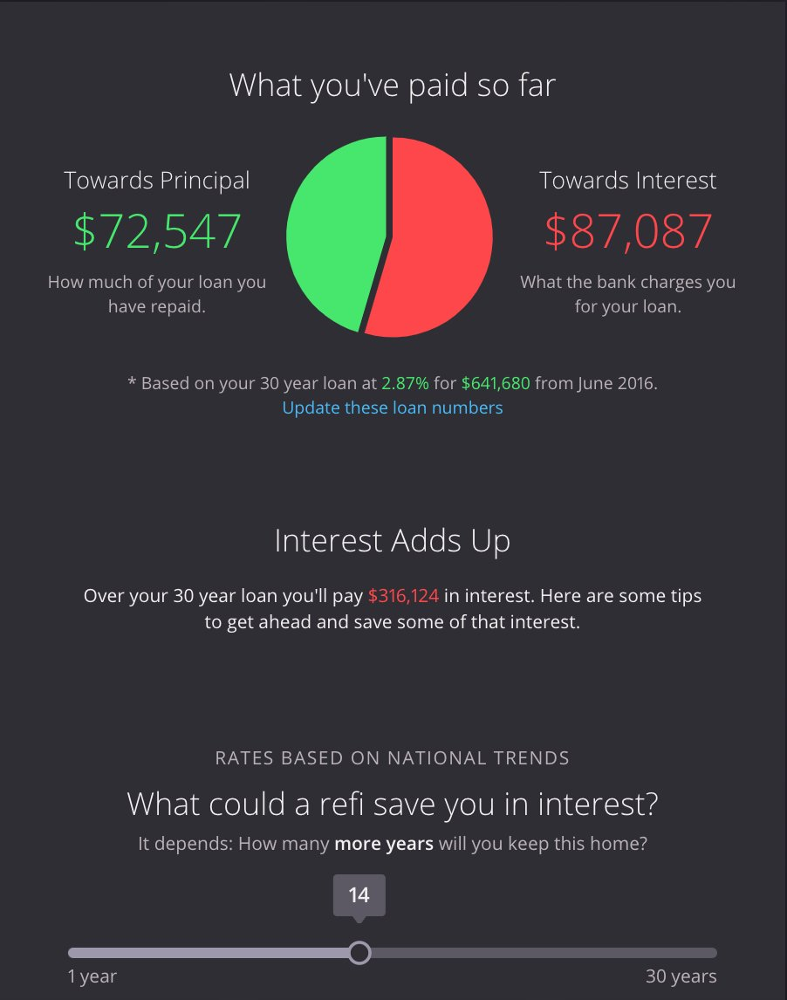
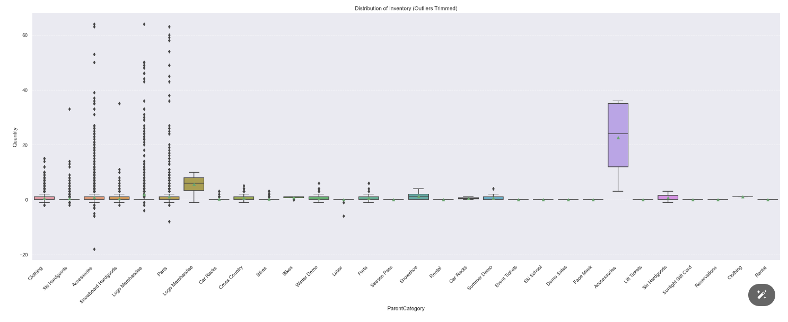
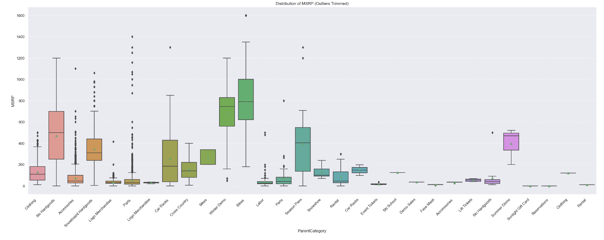

Hi PostHog. I'm Katrina Engelsted — a founding advisor at a pre-revenue AI startup (part-time, on the side), a former solutions engineer, and a marketer who's shipped code at every job since 2012. I'm looking for the right full-time role. I read the JD twice, found your team's marketing RFC, made myself a coffee, and built this page instead of pasting a generic cover letter. Here's the case.
Marketing tech, solutions engineering, frontend dev, GTM. The horizontal bar is real and broad.
Founding advisor at Upstream AI (part-time). RAG, Claude API, sub-agents, the whole stack. I speak the language fluently.
I've owned end-to-end launches at three startups. I make plans, then do the plans.
If "be as weird as possible" is on the wall, I'd like a seat at that wall.
You wrote: "Nothing gets shipped in a meeting" and "make the plan, then do the plan." Same. Here's a non-exhaustive list of things that exist in the world because I shipped them.
Founding technical advisor (part-time, pre-revenue). Wrote the MVP spec, picked the stack (Supabase + Voyage + Claude), built the website, ran the pilot outreach at a regional conference, and signed two pilot utilities. 2 live pilots, 11-table multi-tenant schema with RLS, 1 patient founding partner.
Owned web tech, landing pages, gated content, email campaigns, attribution. Built persona-driven funnels and worked with eng + product on sales enablement that engineers actually used. 10% lift in lead gen from segmented landing pages alone.
Built the lead process flows, profile grading, and automation. The system identified high-intent leads early; sales worked them faster. 15% lift in lead conv, 30% lift in closed deals, 500 leads from one co-built webinar series.
Solutions Eng Mgr at the early team. Designed the data schema for ingesting messy real estate data from multiple sources, shipped the email-driven product for lenders + agents, trained beta testers. The "interest adds up" visualization below is the kind of UI we shipped to make finance feel less like a black box.

Homebot dashboard · principal vs. interest, with a refi-savings sliderFrontend dev on the NPS GIS team. Built and debugged web mapping tools on ArcGIS, Mapbox, and Carto — including the cartography work that became NPS Park Tiles, the official map basemap for park websites. 20% lift in site traffic, 90% reduction in user-reported errors after a debugging rewrite.
Contributed to LearnOSM, the official Humanitarian OpenStreetMap Team training material. Walking new volunteers through tracing buildings, roads, and residential land use so disaster-response teams have the maps they need. Open-source, translated into 23+ languages, used worldwide.
A proper data project for a local Glenwood Springs ski & bike shop: cleaning messy POS data, restructuring an inconsistent product taxonomy, running EDA on inventory and pricing distributions, and laying the groundwork for demand forecasting and pricing optimization. Jupyter notebooks, Cookiecutter Data Science layout, everything on GitHub ↗. Same skill set as enterprise; smaller scale, faster feedback loop.

Inventory distribution by category · seaborn / matplotlib
Price distribution by category · same datasetAn interactive Mapbox-powered visualization of high-altitude van life routes across the American West, built as part of my Quantic MBA portfolio. Geographer brain meets product brain. mappingkat.github.io/elevated-vans ↗
I pulled up your team's marketing RFC #464 and read the section on near-term hires and projects. The thing that matters about that doc isn't the buzzwords — it's that you already know exactly what the next two quarters look like. Here's how each of those items maps to something I've actually done. I'd genuinely take the Partnership Marketer seat if that's where the need is most acute; PMM and the Customer.io migration are equally strong fits.
Partnerships is where my solutions-engineering + martech + GTM background converges. At Lytics I owned the integrations + agency side of CDP rollouts (the literal partner motion). At Teren I built the partner-flavored campaigns that brought in 4× qualified leads. At Homebot I trained the lender + agent reseller channel. Partner programs only work if the marketer can talk to the partner's engineers — and that's the part most marketers can't do.
Of the three, LLM Analytics is the closest to what I do every week. I run evals, prompt-tune, and monitor token spend for the Upstream sub-agent stack. I can write the launch post, the compare-vs-Helicone-and-Langfuse table, and the SQL examples a real AI engineer would actually copy. Error Tracking and Replay are also fair game — I've been on the user end of both for two years.
This is literally what I did at Zayo. Lead-scoring + automation rebuild from scratch — process flows, profile grading, deadlines, dashboards. Migrations like this fail when the marketer can't read the sending logic; they ship clean when the marketer can diff the old triggers against the new ones in a spreadsheet at 10pm. I prefer the 10pm version — and I'd find it oddly fun to dogfood Workflows during the migration.
Universities are a specific channel and they don't move at startup speed. I taught GIS labs at Colgate, mentor mountain-bike kids in Boulder, and contributed to LearnOSM (the HOT OSM training curriculum, translated into 23+ languages). I know how to write for a student who's never deployed anything and for the professor deciding whether to put PostHog on the syllabus. Different audiences, same launch.
Standing up a partner program is mostly repeatable systems: tier criteria, enablement collateral, deal-reg, comp-share, MDF, a dashboard the partner can actually log into. I've built that connective tissue twice — at Zayo for the fiber channel partners and at Homebot for the lender + agent reseller motion. The first version is always uglier than the marketing site suggests, and that's fine — ship it, iterate.
I read that sentence and grinned. "Hire the human, then carve the role" is how I'd staff a small team too — and it's also how I'd like to be staffed. If LLM Analytics, Error Tracking, Partnerships, or the Workflows migration is the right shape for me, I'm in. No ego about which lane.
I read your handbook. Twice. The thing that hooked me wasn't the comp transparency (though, chef's kiss) — it was the part where you say weird means "redesigning an already world-class website for the 5th time" and "building an objectively unnecessary developer toy with dubious shareholder value."
That's exactly the energy I want at this stage. I've spent the last decade in startups that needed someone to wear seven hats and a couple of bigger companies that taught me why I prefer the seven-hat life. Big problems, small teams, fast cycles.
I am bringing to the interview: a Master's in Data Science I just finished, an MBA from somewhere weird (Quantic, also async-native), a Gamma Theta Upsilon honor society pin that I will never display, and the lived experience of co-founding a SaaS company for rural water operators — possibly the least sexy and most rewarding vertical in the world. Also I coach mountain biking.
Pineapple is a dessert treat. Pizza is a savory format with its own integrity. Mixing categories that don't belong together is how you get a worse version of both. Respect the form.
I'm in Boulder, async-native, and comfortable being the loud voice for a launch on Monday and writing the SQL example for the engineer on Tuesday. Whether the seat is Partnership Marketer, PMM on LLM Analytics, or the person who owns the Customer.io → Workflows migration — I'd love to talk.